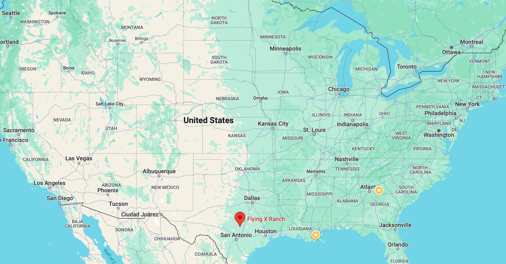
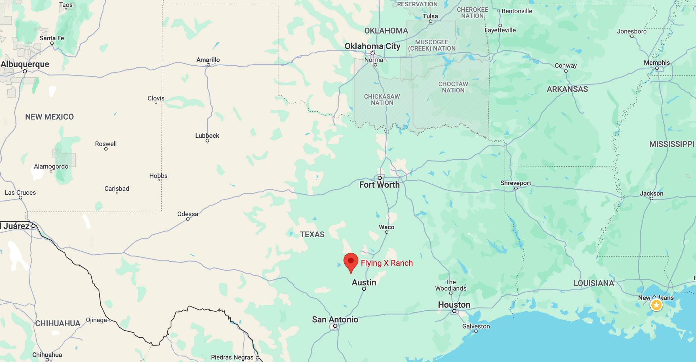
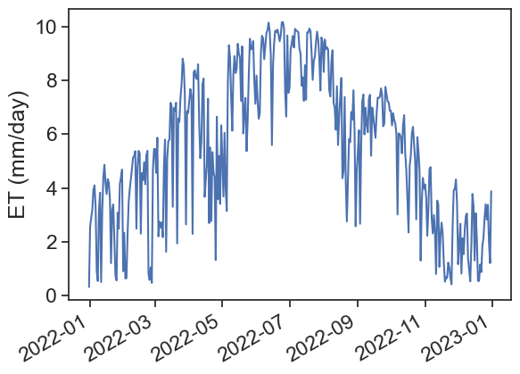
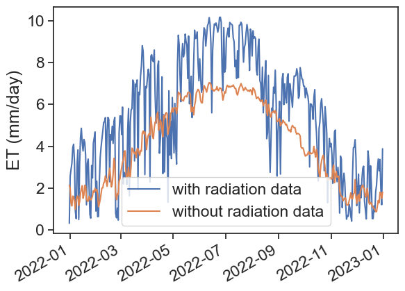
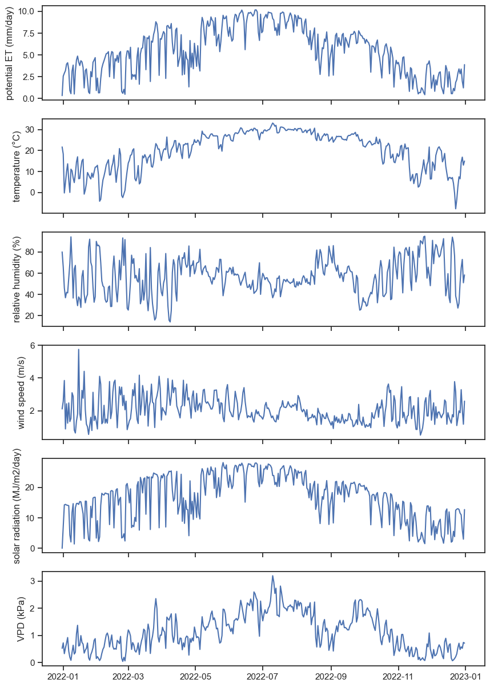

import matplotlib.pyplot as plt
import numpy as np
import pandas as pd
from pandas.plotting import register_matplotlib_converters
register_matplotlib_converters() # datetime converter for a matplotlib
import seaborn as sns
sns.set_theme(style="ticks", font_scale=1.5)
import pyet
from noaa_ftp import NOAA10 Exercises
We will calculate evapotranspiration using two methods: Thornthwaite and Penman. After that, we will compare these estimates with measurements of pan evaporation.
10.1 Download data from the IMS
Please follow the instructions below exactly as they are written. Go to the Israel Meteorological Service website, and download the following data:
- 10-min data
- On the navigation bar on the left, choose “10 Minutes Observations”
- Clock: Local time winter (UTC +2)
- Choose the following date range: 01/01/2020 00:00 to 01/01/2021 00:00
- Choose station Bet Dagan
- Select units: Celcius, m/s, KJ/m^2
- Under “Select parameters”, choose “Check All”
- Choose option “by station”, then “Submit”
- “Download Result as” CSV, call it
bet-dagan-10min.csv
- radiation data
- On the navigation bar on the left, choose “Hourly Radiation”
- Clock: Local time winter (UTC +2)
- Choose the following date range: 01/01/2020 00:00 to 01/01/2021 00:00
- Select hours: Check all hours
- Choose station Bet Dagan
- Select units: KJ/m^2
- Under “Select parameters”, choose “Check All”
- “Download Result as” CSV, call it
bet-dagan-radiation.csv
- pan evaporation data
- On the navigation bar on the left, choose “Daily Observations”
- Choose the following date range: 01/01/2020 00:00 to 01/01/2021 00:00
- Choose station Bet Dagan Man
- Select units: Celcius
- Under “Select parameters”, choose “Check All”
- “Download Result as” CSV, call it
bet-dagan-pan.csv
If for some reason you can’t download the files following the instructions above, click here:
10.2 Install and import relevant packages
We will need to use two new packages:
If you don’t have them installed yet, run this:
Once they are installed, import all the necessary packages for today’s exercises.
10.3 import 10-minute data
df = pd.read_csv('bet-dagan-10min.csv',
# encoding = "ISO-8859-8", # this shows hebrew characters properly
na_values=["-"] # substitute "-" for NaN
)
df['timestamp'] = pd.to_datetime(df['Date & Time (Winter)'], dayfirst=True)
df = df.set_index('timestamp')
# choose only relevant columns to us
# if we don't do this the taking the mean will fail because not all columns are numeric. try df.dtypes to see why
df = df[["Temperature (°C)",
"Wind speed (m/s)",
"Pressure at station level (hPa)",
"Relative humidity (%)"]]
# resample to daily data according to "mean"
df = df.resample('D').mean()
# convert hecto pascals (hPa) to kilo pascals (kPa)
df["Pressure (kPa)"] = df["Pressure at station level (hPa)"] / 10.0
df| Temperature (°C) | Wind speed (m/s) | Pressure at station level (hPa) | Relative humidity (%) | Pressure (kPa) | |
|---|---|---|---|---|---|
| timestamp | |||||
| 2020-01-01 | 12.375000 | 1.552083 | 1013.263889 | 80.590278 | 101.326389 |
| 2020-01-02 | 12.020833 | 2.207639 | 1011.922917 | 85.631944 | 101.192292 |
| 2020-01-03 | 12.962500 | 4.763194 | 1013.757639 | 60.756944 | 101.375764 |
| 2020-01-04 | 10.849306 | 5.439583 | 1011.581250 | 76.909722 | 101.158125 |
| 2020-01-05 | 12.956250 | 4.765278 | 1012.361806 | 79.583333 | 101.236181 |
| ... | ... | ... | ... | ... | ... |
| 2020-12-28 | 14.797917 | 2.631915 | 1014.429861 | 58.729167 | 101.442986 |
| 2020-12-29 | 14.146528 | 1.493750 | 1015.031944 | 71.215278 | 101.503194 |
| 2020-12-30 | 14.186806 | 1.776389 | 1013.234028 | 68.923611 | 101.323403 |
| 2020-12-31 | 14.915278 | 1.395833 | 1011.840972 | 75.465278 | 101.184097 |
| 2021-01-01 | 11.600000 | 0.700000 | 1011.800000 | 95.000000 | 101.180000 |
367 rows × 5 columns
10.4 import radiation data
df_rad = pd.read_csv('bet-dagan-radiation.csv',
na_values=["-"]
)
df_rad['Date'] = pd.to_datetime(df_rad['Date'], dayfirst=True)
df_rad = df_rad.set_index('Date')
df_rad| Station | Radiation type | Hourly radiation 05-06 (KJ/m^2) | Hourly radiation 06-07 (KJ/m^2) | Hourly radiation 07-08 (KJ/m^2) | Hourly radiation 08-09 (KJ/m^2) | Hourly radiation 09-10 (KJ/m^2) | Hourly radiation 10-11 (KJ/m^2) | Hourly radiation 11-12 (KJ/m^2) | Hourly radiation 12-13 (KJ/m^2) | Hourly radiation 13-14 (KJ/m^2) | Hourly radiation 14-15 (KJ/m^2) | Hourly radiation 15-16 (KJ/m^2) | Hourly radiation 16-17 (KJ/m^2) | Hourly radiation 17-18 (KJ/m^2) | Hourly radiation 18-19 (KJ/m^2) | |
|---|---|---|---|---|---|---|---|---|---|---|---|---|---|---|---|---|
| Date | ||||||||||||||||
| 2020-01-01 | Bet Dagan Rad 01/1991-04/2024 | Global | 0.0 | 10.8 | 270.0 | 594.0 | 1252.8 | 1407.6 | 1800.0 | 1587.6 | 1443.6 | 1123.2 | 482.4 | 57.6 | 0.0 | 0.0 |
| 2020-01-01 | Bet Dagan Rad 01/1991-04/2024 | Direct | 0.0 | 3.6 | 72.0 | 428.4 | 1393.2 | 1281.6 | 1911.6 | 1414.8 | 1112.4 | 1083.6 | 752.4 | 0.0 | 0.0 | 0.0 |
| 2020-01-01 | Bet Dagan Rad 01/1991-04/2024 | Diffused | 0.0 | 10.8 | 216.0 | 403.2 | 543.6 | 586.8 | 590.4 | 684.0 | 770.4 | 637.2 | 252.0 | 57.6 | 0.0 | 0.0 |
| 2020-01-02 | Bet Dagan Rad 01/1991-04/2024 | Global | 0.0 | 10.8 | 241.2 | 518.4 | 1018.8 | 93.6 | 129.6 | 345.6 | 720.0 | 673.2 | 478.8 | 82.8 | 0.0 | 0.0 |
| 2020-01-02 | Bet Dagan Rad 01/1991-04/2024 | Direct | 0.0 | 3.6 | 57.6 | 100.8 | 471.6 | 0.0 | 0.0 | 32.4 | 140.4 | 334.8 | 680.4 | 79.2 | 0.0 | 0.0 |
| ... | ... | ... | ... | ... | ... | ... | ... | ... | ... | ... | ... | ... | ... | ... | ... | ... |
| 2020-12-31 | Bet Dagan Rad 01/1991-04/2024 | Direct | 0.0 | 0.0 | 892.8 | 1998.0 | 2455.2 | 2696.4 | 2710.8 | 2545.2 | 2386.8 | 2066.4 | 1328.4 | 169.2 | 0.0 | 0.0 |
| 2020-12-31 | Bet Dagan Rad 01/1991-04/2024 | Diffused | 0.0 | 14.4 | 158.4 | 270.0 | 320.4 | 360.0 | 388.8 | 403.2 | 378.0 | 316.8 | 219.6 | 54.0 | 0.0 | 0.0 |
| 2021-01-01 | Bet Dagan Rad 01/1991-04/2024 | Global | 0.0 | 14.4 | 302.4 | 882.0 | 1432.8 | 1814.4 | 1962.0 | 1897.2 | 1602.0 | 1170.0 | 572.4 | 75.6 | 0.0 | 0.0 |
| 2021-01-01 | Bet Dagan Rad 01/1991-04/2024 | Direct | 0.0 | 0.0 | 662.4 | 1576.8 | 2181.6 | 2412.0 | 2422.8 | 2343.6 | 2188.8 | 1980.0 | 1350.0 | 126.0 | 0.0 | 0.0 |
| 2021-01-01 | Bet Dagan Rad 01/1991-04/2024 | Diffused | 0.0 | 14.4 | 172.8 | 352.8 | 421.2 | 478.8 | 525.6 | 540.0 | 478.8 | 381.6 | 237.6 | 57.6 | 0.0 | 0.0 |
1098 rows × 16 columns
Choose only “Global” radiation. Then sum all hours of the day, and convert from kJ to MJ.
df_rad = df_rad[df_rad["Radiation type"] == "Global "]
df_rad['daily_radiation_MJ_per_m2_per_day'] = (df_rad.iloc[:, 2:] # take all rows, columns 2 to end
.sum(axis=1) / # sum all columns
1000 # divide by 1000 to convert from kJ to MJ
)
df_rad/var/folders/c3/7hp0d36n6vv8jc9hm2440__00000gn/T/ipykernel_93264/3322402408.py:2: SettingWithCopyWarning:
A value is trying to be set on a copy of a slice from a DataFrame.
Try using .loc[row_indexer,col_indexer] = value instead
See the caveats in the documentation: https://pandas.pydata.org/pandas-docs/stable/user_guide/indexing.html#returning-a-view-versus-a-copy
df_rad['daily_radiation_MJ_per_m2_per_day'] = (df_rad.iloc[:, 2:] # take all rows, columns 2 to end| Station | Radiation type | Hourly radiation 05-06 (KJ/m^2) | Hourly radiation 06-07 (KJ/m^2) | Hourly radiation 07-08 (KJ/m^2) | Hourly radiation 08-09 (KJ/m^2) | Hourly radiation 09-10 (KJ/m^2) | Hourly radiation 10-11 (KJ/m^2) | Hourly radiation 11-12 (KJ/m^2) | Hourly radiation 12-13 (KJ/m^2) | Hourly radiation 13-14 (KJ/m^2) | Hourly radiation 14-15 (KJ/m^2) | Hourly radiation 15-16 (KJ/m^2) | Hourly radiation 16-17 (KJ/m^2) | Hourly radiation 17-18 (KJ/m^2) | Hourly radiation 18-19 (KJ/m^2) | daily_radiation_MJ_per_m2_per_day | |
|---|---|---|---|---|---|---|---|---|---|---|---|---|---|---|---|---|---|
| Date | |||||||||||||||||
| 2020-01-01 | Bet Dagan Rad 01/1991-04/2024 | Global | 0.0 | 10.8 | 270.0 | 594.0 | 1252.8 | 1407.6 | 1800.0 | 1587.6 | 1443.6 | 1123.2 | 482.4 | 57.6 | 0.0 | 0.0 | 10.0296 |
| 2020-01-02 | Bet Dagan Rad 01/1991-04/2024 | Global | 0.0 | 10.8 | 241.2 | 518.4 | 1018.8 | 93.6 | 129.6 | 345.6 | 720.0 | 673.2 | 478.8 | 82.8 | 0.0 | 0.0 | 4.3128 |
| 2020-01-03 | Bet Dagan Rad 01/1991-04/2024 | Global | 0.0 | 10.8 | 334.8 | 1040.4 | 1612.8 | 1846.8 | 1904.4 | 1947.6 | 1296.0 | 964.8 | 669.6 | 46.8 | 0.0 | 0.0 | 11.6748 |
| 2020-01-04 | Bet Dagan Rad 01/1991-04/2024 | Global | 0.0 | 3.6 | 97.2 | 237.6 | 208.8 | 208.8 | 93.6 | 79.2 | 352.8 | 144.0 | 183.6 | 36.0 | 0.0 | 0.0 | 1.6452 |
| 2020-01-05 | Bet Dagan Rad 01/1991-04/2024 | Global | 0.0 | 7.2 | 118.8 | 226.8 | 421.2 | 882.0 | 1296.0 | 1090.8 | 1242.0 | 1101.6 | 388.8 | 79.2 | 0.0 | 0.0 | 6.8544 |
| ... | ... | ... | ... | ... | ... | ... | ... | ... | ... | ... | ... | ... | ... | ... | ... | ... | ... |
| 2020-12-28 | Bet Dagan Rad 01/1991-04/2024 | Global | 0.0 | 14.4 | 349.2 | 1000.8 | 1551.6 | 1810.8 | 2048.4 | 1796.4 | 1627.2 | 993.6 | 482.4 | 68.4 | 0.0 | 0.0 | 11.7432 |
| 2020-12-29 | Bet Dagan Rad 01/1991-04/2024 | Global | 0.0 | 14.4 | 342.0 | 936.0 | 1530.0 | 1926.0 | 2088.0 | 1994.4 | 1702.8 | 1216.8 | 604.8 | 64.8 | 0.0 | 0.0 | 12.4200 |
| 2020-12-30 | Bet Dagan Rad 01/1991-04/2024 | Global | 0.0 | 21.6 | 302.4 | 986.4 | 1526.4 | 1922.4 | 2080.8 | 2019.6 | 1720.8 | 1238.4 | 612.0 | 68.4 | 0.0 | 0.0 | 12.4992 |
| 2020-12-31 | Bet Dagan Rad 01/1991-04/2024 | Global | 0.0 | 14.4 | 324.0 | 954.0 | 1476.0 | 1861.2 | 2012.4 | 1908.0 | 1627.2 | 1159.2 | 565.2 | 72.0 | 0.0 | 0.0 | 11.9736 |
| 2021-01-01 | Bet Dagan Rad 01/1991-04/2024 | Global | 0.0 | 14.4 | 302.4 | 882.0 | 1432.8 | 1814.4 | 1962.0 | 1897.2 | 1602.0 | 1170.0 | 572.4 | 75.6 | 0.0 | 0.0 | 11.7252 |
366 rows × 17 columns
Now we can add the daily radiation we have just calculated to the first dataframe containing temperature, RH, etc.
| Temperature (°C) | Wind speed (m/s) | Pressure at station level (hPa) | Relative humidity (%) | Pressure (kPa) | daily_radiation_MJ_per_m2_per_day | |
|---|---|---|---|---|---|---|
| timestamp | ||||||
| 2020-01-01 | 12.375000 | 1.552083 | 1013.263889 | 80.590278 | 101.326389 | 10.0296 |
| 2020-01-02 | 12.020833 | 2.207639 | 1011.922917 | 85.631944 | 101.192292 | 4.3128 |
| 2020-01-03 | 12.962500 | 4.763194 | 1013.757639 | 60.756944 | 101.375764 | 11.6748 |
| 2020-01-04 | 10.849306 | 5.439583 | 1011.581250 | 76.909722 | 101.158125 | 1.6452 |
| 2020-01-05 | 12.956250 | 4.765278 | 1012.361806 | 79.583333 | 101.236181 | 6.8544 |
| ... | ... | ... | ... | ... | ... | ... |
| 2020-12-28 | 14.797917 | 2.631915 | 1014.429861 | 58.729167 | 101.442986 | 11.7432 |
| 2020-12-29 | 14.146528 | 1.493750 | 1015.031944 | 71.215278 | 101.503194 | 12.4200 |
| 2020-12-30 | 14.186806 | 1.776389 | 1013.234028 | 68.923611 | 101.323403 | 12.4992 |
| 2020-12-31 | 14.915278 | 1.395833 | 1011.840972 | 75.465278 | 101.184097 | 11.9736 |
| 2021-01-01 | 11.600000 | 0.700000 | 1011.800000 | 95.000000 | 101.180000 | 11.7252 |
367 rows × 6 columns
10.5 import pan evaporation data
df_pan = pd.read_csv('bet-dagan-pan.csv',
na_values=["-"] # substitute "-" for NaN
)
df_pan['Date'] = pd.to_datetime(df_pan['Date'], dayfirst=True)
df_pan = df_pan.set_index('Date')
df_pan| Station | Maximum Temperature (°C) | Minimum Temperature (°C) | Grass Temperature (°C) | Hail | Frost | Snow | Fog | Thunder | Lightening | Sand storm | Gale | Accumulated 6 hr evaporation (mm) | Accumulated 12 hr evaporation (mm) | Daily evaporation type A (mm) | Daily evaporation type A code (code) | Sunshine duration (minutes) | |
|---|---|---|---|---|---|---|---|---|---|---|---|---|---|---|---|---|---|
| Date | |||||||||||||||||
| 2020-01-01 | Bet Dagan Man 01/1964-04/2024 | NaN | NaN | NaN | 0 | NaN | 0 | 0 | 0 | 0 | 0 | NaN | NaN | NaN | 0.8 | 0.0 | NaN |
| 2020-01-02 | Bet Dagan Man 01/1964-04/2024 | NaN | NaN | NaN | 0 | NaN | 0 | 0 | 1 | 0 | 0 | NaN | NaN | NaN | NaN | NaN | NaN |
| 2020-01-03 | Bet Dagan Man 01/1964-04/2024 | NaN | NaN | NaN | 0 | NaN | 0 | 0 | 0 | 0 | 0 | NaN | NaN | NaN | NaN | NaN | NaN |
| 2020-01-04 | Bet Dagan Man 01/1964-04/2024 | NaN | NaN | NaN | 0 | NaN | 0 | 0 | 1 | 0 | 0 | NaN | NaN | NaN | NaN | NaN | NaN |
| 2020-01-05 | Bet Dagan Man 01/1964-04/2024 | NaN | NaN | NaN | 0 | NaN | 0 | 0 | 1 | 0 | 0 | NaN | NaN | NaN | 2.4 | 0.0 | NaN |
| ... | ... | ... | ... | ... | ... | ... | ... | ... | ... | ... | ... | ... | ... | ... | ... | ... | ... |
| 2020-12-28 | Bet Dagan Man 01/1964-04/2024 | NaN | NaN | NaN | 0 | NaN | 0 | 0 | 0 | 0 | 0 | NaN | NaN | NaN | 3.0 | 0.0 | NaN |
| 2020-12-29 | Bet Dagan Man 01/1964-04/2024 | NaN | NaN | NaN | 0 | NaN | 0 | 0 | 0 | 0 | 0 | NaN | NaN | NaN | 1.8 | 0.0 | NaN |
| 2020-12-30 | Bet Dagan Man 01/1964-04/2024 | NaN | NaN | NaN | 0 | NaN | 0 | 0 | 0 | 0 | 0 | NaN | NaN | NaN | 2.4 | 0.0 | NaN |
| 2020-12-31 | Bet Dagan Man 01/1964-04/2024 | NaN | NaN | NaN | 0 | NaN | 0 | 0 | 0 | 0 | 0 | NaN | NaN | NaN | 1.7 | 0.0 | NaN |
| 2021-01-01 | Bet Dagan Man 01/1964-04/2024 | NaN | NaN | NaN | 0 | NaN | 0 | 0 | 0 | 0 | 0 | NaN | NaN | NaN | 1.5 | 0.0 | NaN |
367 rows × 17 columns
10.6 calculate penman
We need some data about the Bet Dagan Station. See here.
- Latitude: 32.0073°
- Elevation: 31 m
# the site elevation [m]
elevation = 31.0
# the site latitude [rad]
latitude = pyet.utils.deg_to_rad(32.0073)
penm = pyet.combination.penman(tmean=df["Temperature (°C)"],
wind=df["Wind speed (m/s)"],
pressure=df["Pressure (kPa)"],
elevation=elevation,
rh=df["Relative humidity (%)"],
rs=df["daily_radiation_MJ_per_m2_per_day"],
lat=latitude,
)10.7 Thornthwaite
E = 16\left[ \frac{10\,T^\text{monthly mean}}{I} \right]^a,
where
I = \sum_{i=1}^{12} \left[ \frac{T_i^\text{monthly mean}}{5} \right]^{1.514},
and
\begin{split} a &= 6.75\times 10^{-7}I^3 \\ &- 7.71\times 10^{-5}I^2 \\ &+ 1.792\times 10^{-2}I \\ &+ 0.49239 \nonumber \end{split}
- E is the monthly potential ET (mm)
- T_\text{monthly mean} is the mean monthly temperature in °C
- I is a heat index
- a is a location-dependent coefficient
From df, make a new dataframe, df_th, that stores monthly temperatures means. Use resample function.
# monthly data
df_th = (df['Temperature (°C)'].resample('MS') # MS assigns mean to first day in the month
.mean()
.to_frame()
)
# we now add 14 days to the index, so that all monthly data is in the middle of the month
# not really necessary, makes plot look better
df_th.index = df_th.index + pd.DateOffset(days=14)
df_th| Temperature (°C) | |
|---|---|
| timestamp | |
| 2020-01-15 | 12.484812 |
| 2020-02-15 | 14.044349 |
| 2020-03-15 | 16.371381 |
| 2020-04-15 | 18.476339 |
| 2020-05-15 | 23.177769 |
| 2020-06-15 | 24.666423 |
| 2020-07-15 | 27.380466 |
| 2020-08-15 | 28.099328 |
| 2020-09-15 | 28.421644 |
| 2020-10-15 | 25.058944 |
| 2020-11-15 | 19.266082 |
| 2020-12-15 | 15.915031 |
| 2021-01-15 | 11.600000 |
Calculate I, then a, and finally E_p. Add E_p as a new column in df_th.
# Preparing "I" for the Thornthwaite equation
I = np.sum(
(
df_th['Temperature (°C)'] / 5
) ** (1.514)
)
# Preparing "a" for the Thornthwaite equation
a = (+6.75e-7 * I**3
-7.71e-5 * I**2
+1.792e-2 * I
+ 0.49239)
# The final Thornthwaite model for monthly potential ET (mm)
df_th['Ep (mm/month)'] = 16*(
(
10 * df_th['Temperature (°C)'] / I
) ** a
)
df_th| Temperature (°C) | Ep (mm/month) | |
|---|---|---|
| timestamp | ||
| 2020-01-15 | 12.484812 | 20.695370 |
| 2020-02-15 | 14.044349 | 27.765987 |
| 2020-03-15 | 16.371381 | 40.716009 |
| 2020-04-15 | 18.476339 | 55.071668 |
| 2020-05-15 | 23.177769 | 96.997621 |
| 2020-06-15 | 24.666423 | 113.308714 |
| 2020-07-15 | 27.380466 | 147.047919 |
| 2020-08-15 | 28.099328 | 156.877841 |
| 2020-09-15 | 28.421644 | 161.409587 |
| 2020-10-15 | 25.058944 | 117.864618 |
| 2020-11-15 | 19.266082 | 61.138581 |
| 2020-12-15 | 15.915031 | 37.941007 |
| 2021-01-15 | 11.600000 | 17.225130 |

10.8 Data from NOAA
Let’s download data from a different repository. More specifically, we will retrieve sub-hourly data from the U.S. Climate Reference Network. We can see all the sites in this map. Besides the sub-hourly data, we can find other datasets (monthly, daily, etc).
As an example, we will choose the station near Austin, Texas.
 
The Austin 33 NW station has coordinates (30.62000, -98.08000) and an elevation of 1361 m above sea level. Its climate is classified as humid subtropical. Rainfall is evenly distributed rainfall throughout the year, averaging around 870 mm per year. The summer is hot and long, where average maximum temperatures reach 35 °C in July and August. The coldest month is January, with average maximum temperatures of 17 °C.
This station lies in the transition zone between the humid regions of the American Southwest and the dry deserts of the American Southwest.
In order to download, we will access the data from the FTP client using the python package noaa_ftp.
The dir command list everything in the folder:
drwxrwsr-x 2 ftp ftp 8192 Oct 7 2020 2006
drwxrwsr-x 2 ftp ftp 8192 Nov 10 2021 2007
drwxrwsr-x 2 ftp ftp 8192 Dec 1 2020 2008
drwxrwsr-x 2 ftp ftp 12288 May 25 2021 2009
drwxrwsr-x 2 ftp ftp 12288 Nov 10 2021 2010
drwxrwsr-x 2 ftp ftp 12288 Nov 12 2021 2011
drwxrwsr-x 2 ftp ftp 12288 Nov 12 2021 2012
drwxrwsr-x 2 ftp ftp 12288 Nov 15 2021 2013
drwxrwsr-x 2 ftp ftp 12288 Nov 15 2021 2014
drwxrwsr-x 2 ftp ftp 12288 Nov 12 2021 2015
drwxrwsr-x 2 ftp ftp 12288 Nov 12 2021 2016
drwxrwsr-x 2 ftp ftp 12288 Nov 15 2021 2017
drwxrwsr-x 2 ftp ftp 12288 Nov 12 2021 2018
drwxrwsr-x 2 ftp ftp 12288 Nov 24 2021 2019
drwxrwsr-x 2 ftp ftp 12288 Nov 30 2021 2020
drwxrwsr-x 2 ftp ftp 12288 Jan 29 2022 2021
drwxrwsr-x 2 ftp ftp 12288 Aug 23 2022 2022
drwxrwsr-x 2 ftp ftp 12288 Nov 29 2023 2023
drwxrwsr-x 2 ftp ftp 12288 Apr 9 16:53 2024
-rw-rw-r-x 1 ftp ftp 2157 Feb 18 2022 headers.txt
-rw-rw-r-x 1 ftp ftp 456 Oct 7 2020 HEADERS.txt
-rw-rw-r-x 1 ftp ftp 14892 Feb 18 2022 readme.txt
-rw-rw-r-x 1 ftp ftp 14936 Sep 21 2021 README.txt
drwxrwsr-x 2 ftp ftp 8192 May 27 01:50 snapshotsIt’s worth clicking here to see this directory with your own eyes. You can use your browser to explore this. Click on readme.txt and, well, read it.
Let’s download two files:
- sub-hourly data for the year 2022 for Austin, TX.
- the
HEADERS.txtcontains the names of the columns in the csv.
Type the following lines:
noaa = NOAA("ftp.ncdc.noaa.gov", 'pub/data/uscrn/products/subhourly01').download('HEADERS.txt')
noaa = NOAA("ftp.ncdc.noaa.gov", 'pub/data/uscrn/products/subhourly01/2022').download('CRNS0101-05-2022-TX_Austin_33_NW.txt')If for some reason you can’t download directly from NOAA, click here to get the files:
# Read column names from another file
column_names = pd.read_csv('HEADERS.txt',
header=None,
sep='\s+',
)
# Read CSV file using column names from another file
df = pd.read_csv("CRNS0101-05-2022-TX_Austin_33_NW.txt", # file to read
sep='\s+', # use (any number of) white spaces as delimiter between columns
names=column_names.iloc[1], # column names from row i=1 of "column_names"
na_values=[-99, -9999, -99999], # substitute these values by NaN
)
# make integer column LST_DATE as string
df['LST_DATE'] = df['LST_DATE'].astype(str)#.apply(lambda x: f'{x:0>4}')
# make integer column LST_DATE as string
# pad numbers with 0 from the left, such that 15 becomes 0015
df['LST_TIME'] = df['LST_TIME'].apply(lambda x: f'{x:0>4}')
# combine both DATE and TIME
df['datetime'] = pd.to_datetime(df['LST_DATE'] + df['LST_TIME'], format='%Y%m%d%H%M')
df = df.set_index('datetime')
df| WBANNO | UTC_DATE | UTC_TIME | LST_DATE | LST_TIME | CRX_VN | LONGITUDE | LATITUDE | AIR_TEMPERATURE | PRECIPITATION | ... | ST_TYPE | ST_FLAG | RELATIVE_HUMIDITY | RH_FLAG | SOIL_MOISTURE_5 | SOIL_TEMPERATURE_5 | WETNESS | WET_FLAG | WIND_1_5 | WIND_FLAG | |
|---|---|---|---|---|---|---|---|---|---|---|---|---|---|---|---|---|---|---|---|---|---|
| datetime | |||||||||||||||||||||
| 2021-12-31 18:05:00 | 23907 | 20220101 | 5 | 20211231 | 1805 | 2.623 | -98.08 | 30.62 | 23.3 | 0.0 | ... | C | 0 | 66.0 | 0 | NaN | NaN | 964.0 | 0 | 1.48 | 0 |
| 2021-12-31 18:10:00 | 23907 | 20220101 | 10 | 20211231 | 1810 | 2.623 | -98.08 | 30.62 | 23.3 | 0.0 | ... | C | 0 | 66.0 | 0 | NaN | NaN | 964.0 | 0 | 1.48 | 0 |
| 2021-12-31 18:15:00 | 23907 | 20220101 | 15 | 20211231 | 1815 | 2.623 | -98.08 | 30.62 | 23.2 | 0.0 | ... | C | 0 | 66.0 | 0 | NaN | NaN | 964.0 | 0 | 1.01 | 0 |
| 2021-12-31 18:20:00 | 23907 | 20220101 | 20 | 20211231 | 1820 | 2.623 | -98.08 | 30.62 | 23.1 | 0.0 | ... | C | 0 | 66.0 | 0 | NaN | NaN | 964.0 | 0 | 0.51 | 0 |
| 2021-12-31 18:25:00 | 23907 | 20220101 | 25 | 20211231 | 1825 | 2.623 | -98.08 | 30.62 | 22.7 | 0.0 | ... | C | 0 | 68.0 | 0 | NaN | NaN | 964.0 | 0 | 0.67 | 0 |
| ... | ... | ... | ... | ... | ... | ... | ... | ... | ... | ... | ... | ... | ... | ... | ... | ... | ... | ... | ... | ... | ... |
| 2022-12-31 17:40:00 | 23907 | 20221231 | 2340 | 20221231 | 1740 | 2.623 | -98.08 | 30.62 | 20.8 | 0.0 | ... | C | 0 | 37.0 | 0 | NaN | NaN | 964.0 | 0 | 2.92 | 0 |
| 2022-12-31 17:45:00 | 23907 | 20221231 | 2345 | 20221231 | 1745 | 2.623 | -98.08 | 30.62 | 20.7 | 0.0 | ... | C | 0 | 37.0 | 0 | NaN | NaN | 963.0 | 0 | 2.94 | 0 |
| 2022-12-31 17:50:00 | 23907 | 20221231 | 2350 | 20221231 | 1750 | 2.623 | -98.08 | 30.62 | 20.6 | 0.0 | ... | C | 0 | 37.0 | 0 | NaN | NaN | 962.0 | 0 | 3.61 | 0 |
| 2022-12-31 17:55:00 | 23907 | 20221231 | 2355 | 20221231 | 1755 | 2.623 | -98.08 | 30.62 | 20.4 | 0.0 | ... | C | 0 | 38.0 | 0 | NaN | NaN | 962.0 | 0 | 3.03 | 0 |
| 2022-12-31 18:00:00 | 23907 | 20230101 | 0 | 20221231 | 1800 | 2.623 | -98.08 | 30.62 | 20.1 | 0.0 | ... | C | 0 | 39.0 | 0 | NaN | NaN | 961.0 | 0 | 2.32 | 0 |
105120 rows × 23 columns
The provided data is not the same as what is provided by the IMS.
- Now we don’t have air pressure values, so we need to provide elevation.
- We do have R_n (net radiation), so there is no need to provide latitude.
Attention! According to the headers file, net radiation provided by NOAA is in W m^{-2}, but pyet requires it to be MJ m^{-2} d^{-1}. We need to agreggate the downloaded data into daily radiation.
Data comes in 5-minute intervals, so if we have a value x W m^{-2} over a 5-minute interval, the total amount of energy is:
x \frac{W}{m^{-2}}\times 5\, min = x \frac{J}{m^{-2}\cdot s}\times 5\cdot 60\, s = x\cdot 5 \cdot 60 \frac{J}{m^{-2}}
Let’s call X=\sum_{day}x. Then, summing all energy in 1 day:
\sum_{day}x \cdot 5 \cdot 60 \frac{J}{m^{-2}\cdot day} = \sum_{day}x \cdot 5 \cdot 60\cdot 10^{-6} \frac{MJ}{m^{-2}\cdot day}
Make a new dataframe with daily means for temperature, relative humidity and wind speed.
| AIR_TEMPERATURE | RELATIVE_HUMIDITY | WIND_1_5 | |
|---|---|---|---|
| datetime | |||
| 2021-12-31 | 21.721127 | 79.985915 | 2.113662 |
| 2022-01-01 | 18.336806 | 65.833333 | 2.586840 |
| 2022-01-02 | -0.222222 | 46.187500 | 3.849757 |
| 2022-01-03 | 4.592708 | 36.927083 | 0.892778 |
| 2022-01-04 | 9.964583 | 41.996528 | 2.428924 |
| ... | ... | ... | ... |
| 2022-12-27 | 6.534375 | 50.871528 | 1.881597 |
| 2022-12-28 | 14.418056 | 65.090278 | 3.289167 |
| 2022-12-29 | 16.878125 | 72.934028 | 2.068750 |
| 2022-12-30 | 13.047917 | 51.006944 | 1.180729 |
| 2022-12-31 | 15.010138 | 58.387097 | 2.590276 |
366 rows × 3 columns
| AIR_TEMPERATURE | RELATIVE_HUMIDITY | WIND_1_5 | SOLAR_RADIATION | |
|---|---|---|---|---|
| datetime | ||||
| 2021-12-31 | 21.721127 | 79.985915 | 2.113662 | 0.0000 |
| 2022-01-01 | 18.336806 | 65.833333 | 2.586840 | 7.2870 |
| 2022-01-02 | -0.222222 | 46.187500 | 3.849757 | 14.2536 |
| 2022-01-03 | 4.592708 | 36.927083 | 0.892778 | 14.4309 |
| 2022-01-04 | 9.964583 | 41.996528 | 2.428924 | 14.2056 |
| ... | ... | ... | ... | ... |
| 2022-12-27 | 6.534375 | 50.871528 | 1.881597 | 11.5200 |
| 2022-12-28 | 14.418056 | 65.090278 | 3.289167 | 10.9917 |
| 2022-12-29 | 16.878125 | 72.934028 | 2.068750 | 5.9829 |
| 2022-12-30 | 13.047917 | 51.006944 | 1.180729 | 2.9967 |
| 2022-12-31 | 15.010138 | 58.387097 | 2.590276 | 12.7248 |
366 rows × 4 columns
Let’s use PYET to calculate the potential ET. This is the time to go to the library’s GitHub page and read the functions: https://github.com/pyet-org/pyet/tree/master
fig, ax = plt.subplots(1)
ax.plot(penm2, label="penman")
plt.gcf().autofmt_xdate() # makes slanted dates
ax.set_ylabel("ET (mm/day)");
Does this make sense? How can we know?
What happens if we download data from a station, and we’re missing Solar Radiation? What to do? The library PYET can infer solar ratiation given the station latitude and the number of daylight hours in the day.
lat = 30.62 # degrees
lat = pyet.utils.deg_to_rad(lat)
df_TX['daylight_hours'] = pyet.meteo_utils.daylight_hours(tmean.index, lat)
penm3 = pyet.combination.penman(tmean=df_TX["AIR_TEMPERATURE"],
wind=df_TX["WIND_1_5"],
elevation=elevation,
rh=df_TX["RELATIVE_HUMIDITY"],
lat=lat,
n=df_TX['daylight_hours'],
)fig, ax = plt.subplots(1)
ax.plot(penm2, label="with radiation data")
ax.plot(penm3, label="without radiation data")
ax.legend()
plt.gcf().autofmt_xdate() # makes slated dates
ax.set_ylabel("ET (mm/day)")Text(0, 0.5, 'ET (mm/day)')
sns.set_theme(style="ticks", font_scale=1.0)
fig, ax = plt.subplots(6,1, figsize=(10,15), sharex=True)
ax[0].plot(penm2); ax[0].set_ylabel("potential ET (mm/day)")
ax[1].plot(df_TX['AIR_TEMPERATURE']); ax[1].set_ylabel("temperature (°C)")
ax[2].plot(df_TX['RELATIVE_HUMIDITY']); ax[2].set_ylabel("relative humidity (%)")
ax[3].plot(df_TX['WIND_1_5']); ax[3].set_ylabel("wind speed (m/s)")
ax[4].plot(df_TX['SOLAR_RADIATION']); ax[4].set_ylabel("solar radiation (MJ/m2/day)")
ax[5].plot(vpd); ax[5].set_ylabel("VPD (kPa)")Text(0, 0.5, 'VPD (kPa)')
Can you see some patterns from the graphs above? Let’s focus on the relationship between ET and solar radiation.